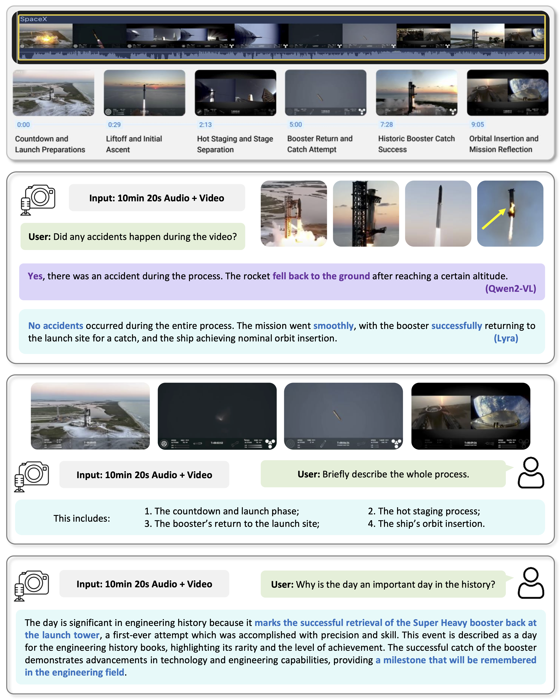
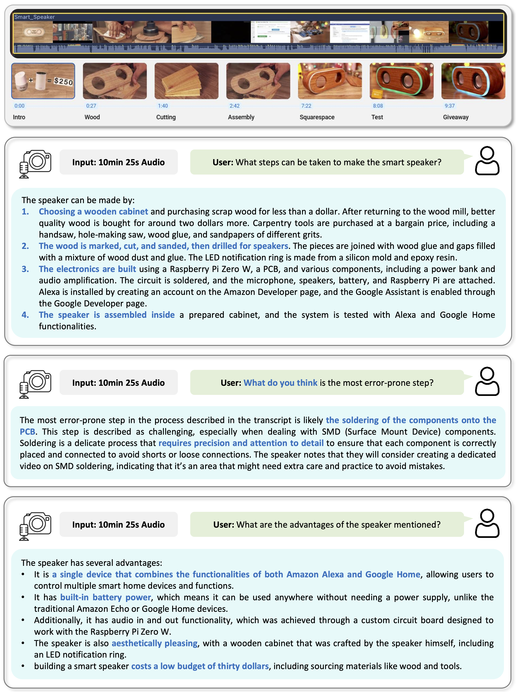

As Multi-modal Large Language Models (MLLMs) evolve, expanding beyond single-domain capabilities is essential to meet the demands for more versatile and efficient AI. However, previous omni-models have insufficiently explored speech, neglecting its integration with multi-modality. We introduce Lyra, an efficient MLLM that enhances multi-modal abilities, including advanced long speech comprehension, sound understanding, cross-modality efficiency, and seamless speech interaction. To achieve efficiency and speech-centric capabilities, Lyra employs three strategies: (1) leveraging existing open-source large models and a proposed multi-modlity LoRA to reduce training costs and data requirements; (2) using a latent multi-modality regularizer and extractor to strengthen the relationship between speech and other modalities, thereby enhancing model performance; and (3) constructing a high-quality, extensive dataset that includes 1.5M multi-modal (language, vision, audio) data samples and 12K long speech samples, enabling Lyra to handle complex long speech inputs and achieve more robust omni-cognition. Compared to other omni-methods, Lyra achieves state-of-the-art performance on various vision-language, vision-speech, and speech-language benchmarks, while also using fewer computational resources and less training data.
Lyra supports multi-modal inputs. When the data contains a speech modality, we use the latent cross-modality regularizer to assist. Data from each modality is processed through encoders and projectors before being sent into the LLM. Within the LLM, multi-modality LoRA and latent multi-modality extraction modules operate synergistically, facilitating the simultaneous generation of both speech and text outputs.

@article{zhong2024lyra,
title={Lyra: An Efficient, Speech-Centric Framework for Omni-Cognition},
author={Zhong, Zhingsheng and Wang, Chengyao and Liu, Yuqi and Yang, Senqiao and Tang, Longxiang and Zhang, Yuechen and Li, Jingyao and Qu, Tianyuan and Li, Yanwei and Chen, Yukang and Yu, Shaozuo and Wu, Sitong and Lo, Eric and Liu, Shu and Jia, Jiaya},
journal={arXiv preprint arXiv:2412.09501},
year={2024}
}
This website is adapted from Nerfies, licensed under a Creative Commons Attribution-ShareAlike 4.0 International License.